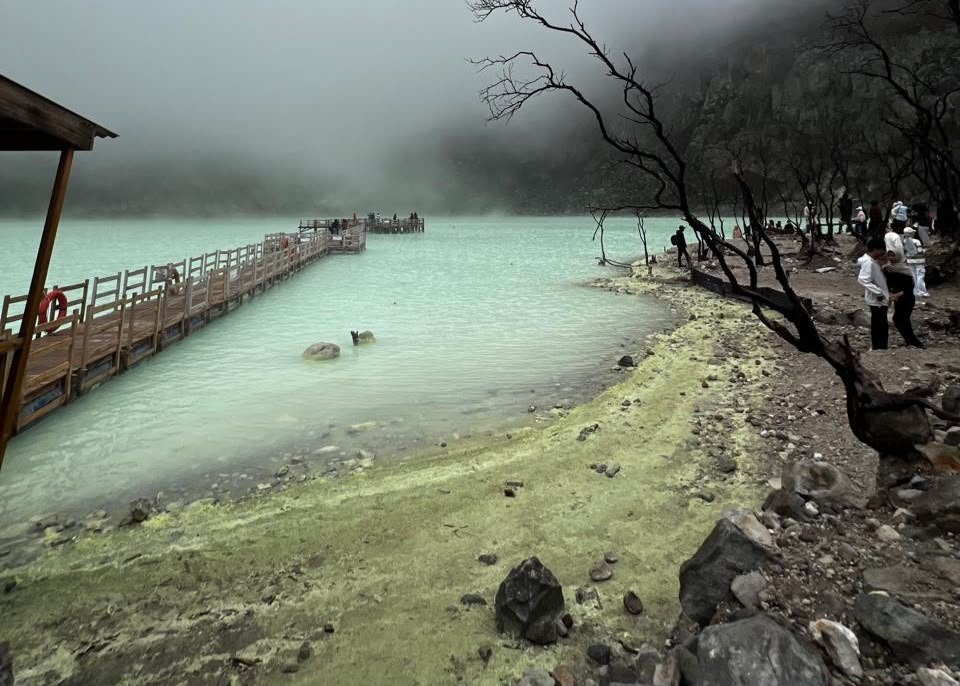

Tentang Kawah Putih
Kawah Putih merupakan danau kawah yang berada di kawasan Gunung Patuha,
Ciwidey, Kabupaten Bandung, Jawa Barat. Kawah ini terbentuk akibat aktivitas
vulkanik Gunung Patuha dan berada di ketinggian sekitar 2.400 meter di atas
permukaan laut.
Ciri khas Kawah Putih adalah air danaunya yang dapat terlihat berwarna putih,
putih kehijauan, hingga kebiruan tergantung kondisi dan kadar belerang. Di
sekitar kawah juga terdapat endapan belerang berwarna kekuningan serta aroma
belerang yang cukup khas.
Perpaduan warna danau, tebing kawah, pepohonan, serta kabut yang sering
menyelimuti kawasan membuat pemandangan Kawah Putih terlihat unik dan
berbeda dari wisata alam lainnya.
Galeri


Aktivitas
Aktivitas yang bisa dilakukan:
- Fotografi - Mengabadikan pemandangan Kawah Putih.
- Menjelajahi Kawasan - Menjelajahi sekitar kawah.
- Menikmati Pemandangan - Menikmati keindahan kawah dan pegunungan.
Lokasi
Kawah Putih terletak di Ciwidey, Kabupaten Bandung, Jawa Barat, Indonesia.
Jl. Raya Soreang - Ciwidey KM 11, Desa Alam Endah,
Kecamatan Rancabali, Kabupaten Bandung, Jawa Barat 40973.
Tabel Informasi
| Informasi | Detail |
|---|---|
| Jam Operasional | Setiap hari, pukul 07.00 - 17.00 WIB |
| Tiket Masuk | Rp 30.000/orang (dewasa), Rp 20.000/orang (anak-anak) |
| Suasana | Sejuk dan berkabut |
| Persiapan | Disarankan membawa masker karena terdapat aroma belerang yang menyengat. |
| Pakaian | Gunakan pakaian hangat karena suhu cukup dingin. |